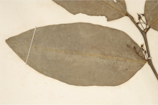
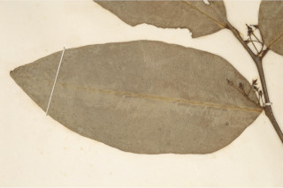
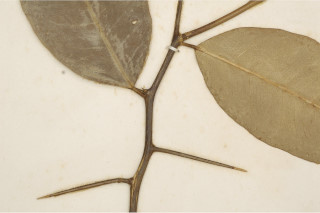
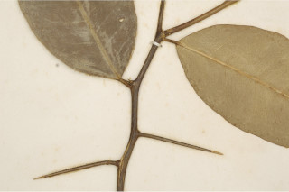

Shrubs or small trees up to 4 m tall.
4 ಮೀ. ಎತ್ತರದವರೆಗಿನ ಪೊದೆಗಳು ಅಥವಾ ಸಣ್ಣಗಾತ್ರದ ಮರಗಳು.
Shrubs or small trees up to 4 m tall.
குத்துச்செடி அல்லது சிறிய மரம் 4 மீ. உயரம் வரை வளரக்கூடியது.
Bark yellowish, smooth; blaze whitish.
ತೊಗಟೆ ಹಳದಿ ಬಣ್ಣದ ಛಾಯೆ ಹೊಂದಿದ್ದು ನಯವಾಗಿರುತ್ತದೆ;ಕಚ್ಚು ಮಾಡಿದ ಜಾಗ ಬಿಳಿ ಬಣ್ಣದ ಛಾಯೆಯನ್ನು ಹೊಂದಿರುತ್ತದೆ.
Bark yellowish, smooth; blaze whitish.
மரத்தின் பட்டை மஞ்சள் நிறமானது, வழுவழுப்பானது; உள்பட்டை வெள்ளை நிறமானது.
Branches with long spines; branchlets terete, glabrous.
ಕವಲುಗಳು ಉದ್ದವಾದ ಮುಳ್ಳುಗಳನ್ನು ಹೊಂದಿರುತ್ತವೆ;ಕಿರುಕೊಂಬೆಗಳು ದುಂಡಾಗಿದ್ದು ರೋಮರಹಿತವಾಗಿರುತ್ತವೆ.
Branches with long spines; branchlets terete, glabrous.
கிளைகள் நீளமான முட்களுடையது; சிறியநுனிக்கிளைகள் குறுக்குவெட்டுத்; சிறிய நுனிக்கிளைகள் குறுக்குவெட்டுத் தோற்றத்தில் வளையமானது, உரோமங்களற்றது.
Leaves simple, alternate, spiral; petiole 0.5-1 cm long, planoconvex in cross section, glabrous, articulate; lamina 7.5-13 x 3-6 cm, elliptic-ovate to elliptic-lanceolate, apex narrowly acute to acuminate with retuse tip, base acute, margin entire, coriaceous, glabrous, glandular punctate, pale beneath, drying olive green; midrib raised above; secondary_nerves 10-18 pairs; tertiary_nerves admedially ramified.
ಎಲೆಗಳು ಸರಳವಾಗಿದ್ದು ಪರ್ಯಾಯ ಮತ್ತು ಸುತ್ತು ಜೋಡನಾ ವ್ಯವಸ್ಥೆಯಲ್ಲಿರುತ್ತವೆ; ತೊಟ್ಟುಗಳು 0.5-1ಸೆಂ.ಮೀ.ವರೆಗಿನ ಉದ್ದವಿದ್ದು ಅಡ್ಡ ಸೀಳಿದಾಗ ಸಪಾಟ ಪೀನ ಮಧ್ಯದ ಆಕಾರದಲ್ಲಿರುತ್ತವೆ ರೋಮರಹಿತವಾಗಿದ್ದು ಗಿಣ್ಣುಗಳಿಂದ ಕೂಡಿರುತ್ತವೆ; ಪತ್ರಗಳು 7.5-13 X 3 –6 ಸೆಂ.ಮೀ. ಗಾತ್ರ ಹೊಂದಿದ್ದು,ಅಂಡವೃತ್ತ-ಅಂಡದ ಮಾದರಿಯಿಂದ ಅಂಡವೃತ್ತ-ಭರ್ಜಿಯವರೆಗಿನ ಆಕಾರ ಹೊಂದಿದ್ದು,ಸಂಕುಚಿತ ಚೂಪಾದುದರಿಂದ ಅಗಲವಾದ ಹಾಗೂ ದುಂಡನೆಯ ಅಗ್ರದಲ್ಲಿ ತಗ್ಗುಳ್ಳ ತುದಿ, ಚೂಪಾದ ಬುಡ, ನಯವಾದ ಅಂಚು, ತೊಗಲನ್ನೋಲುವ ಮೇಲ್ಮೈ ಹೊಂದಿದ್ದು ರೋಮರಹಿತವಾಗಿರುತ್ತವೆ ಹಾಗೂ ಮಚ್ಚೆ ರೀತಿಯ ರಸಗ್ರಂಥಿಗಳ ಸಮೇತವಿರುತ್ತವೆ ಮತ್ತು ತಳಭಾಗದಲ್ಲಿ ತೆಳು ಬಣ್ಣದಲ್ಲಿರುತ್ತವೆ ಒಣಗಿದಾಗ ಮಬ್ಬು ಹಳದಿ ಛಾಯೆಯ ಹಸಿರು ಬಣ್ಣದಲ್ಲಿರುತ್ತವೆ;ಮಧ್ಯನಾಳ ಪತ್ರದ ಮೇಲ್ಭಾಗದಲ್ಲಿ ಉಬ್ಬಿರುತ್ತವೆ ; ಎರಡನೇ ದರ್ಜೆಯ ನಾಳಗಳು 10-18 ಜೋಡಿಗಳಿರುತ್ತವೆ ;ಮೂರನೇ ದರ್ಜೆಯ ನಾಳಗಳ ಕವಲುಗಳು ಎಲೆಯ ಅಕ್ಷದ ಕಡೆಗೆಇರುತ್ತವೆ.
Leaves simple, alternate, spiral; petiole 0.5-1 cm long, planoconvex in cross section, glabrous, articulate; lamina 7.5-13 x 3-6 cm, elliptic-ovate to elliptic-lanceolate, apex narrowly acute to acuminate with retuse tip, base acute, margin entire, coriaceous, glabrous, glandular punctate, pale beneath, drying olive green; midrib raised above; secondary_nerves 10-18 pairs; tertiary_nerves admedially ramified.
இலைகள் தனித்தவை, மாற்றுஅடுக்கமானவை, சுழல் போன்று அமைந்தவை; இலைக்காம்பு 0.5-1 செ.மீ. நீளமானது, குறுக்குவெட்டுத் தோற்றத்தில் பிளேனோகான்வக்ஸ், உரோமங்களற்றது, இணைந்தவை; இலை அலகு 7.5-13 X 3-6 செ.மீ., நீள்வட்டம்-முட்டை வடிவானது முதல் நீள்வட்டம்-ஈட்டி வடிவானது, அலகின் நுனி சிறிது கூரியது முதல் அதிக்கூரியதுடன் அதன் முனையில் சிறு பிளவுடையது (ரெட்யூஸ்), அலகின் தளம் கூரியது, அலகின் விளிம்பு முழுமையானது, கோரியேசியஸ், உரோமங்களற்றது, ஒளிபுகும் சுரப்பி புள்ளிகளுடையது, அலகின் கீழ்பரப்பு வெளிறியது, உலரும் போது ஆலிவ் பச்சை நிறமானது; மையநரம்பு மேற்புறத்தில் அலகின் பரப்பைவிட உயர்ந்து இருக்கும்; இரண்டாம் நிலை நரம்புகள் 10-18 ஜோடிகள்; மூன்றாம் நிலை நரம்புகள் அட்மீடியல்லி ராமிபைடு.
Inflorescence axillary short cymes; flowers white; pedicel 0.4 cm long; stamens free.
ಪುಷ್ಪಮಂಜರಿಗಳು ಅಕ್ಷಾಕಂಕುಳಿನಲ್ಲಿನ ಚಿಕ್ಕ ಗಾತ್ರದ ಮಧ್ಯಾರಂಭಿ ಮಾದರಿಯವು; ಹೂಗಳು ಬಿಳಿ ಬಣ್ಣದವು;ತೊಟ್ಟುಗಳು 0.4 ಸೆಂ.ಮೀ. ಉದ್ದವಿರುತ್ತವೆ;ಕೇಸರಗಳು ಸ್ವತಂತ್ರವಾಗಿರುತ್ತವೆ.
Inflorescence axillary short cymes; flowers white; pedicel 0.4 cm long; stamens free.
மஞ்சரி இலைக்கோணங்களில் காணப்படுபவை, குட்டையானது சைம் வகை மஞ்சரி; மலர்கள் வெள்ளை நிறமானது; மலர்காம்பு 0.4 செ.மீ. நீளமானது; மகரந்தாள்கள் தனித்தவை.
Berry, ovoid and apiculate, to 1.9 cm long; seeds 4.
ಡ್ರೂಪ್ಗಳು ಅಂಡಾಕಾರದಲ್ಲಿದ್ದು ಅಗ್ರದಲ್ಲಿ ಸಣ್ಣ ಚೂಪು ಮುಳ್ಳನ್ನು ಹೊಂದಿರುತ್ತವೆ, 1.9 ಸೆಂ.ಮೀ.ಉದ್ದವನ್ನು ಹೊಂದಿರುತ್ತವೆ;ಬೀಜಗಳ ಸಂಖ್ಯೆ 4.
Berry, ovoid and apiculate, to 1.9 cm long; seeds 4.
முழுச்சதைகனி (பெர்ரி), முட்டை வடிவானது மற்றும் நீட்சியுடையது, 1.9 செ.மீ. நீளமானது; விதைகள் 4.
 

 
